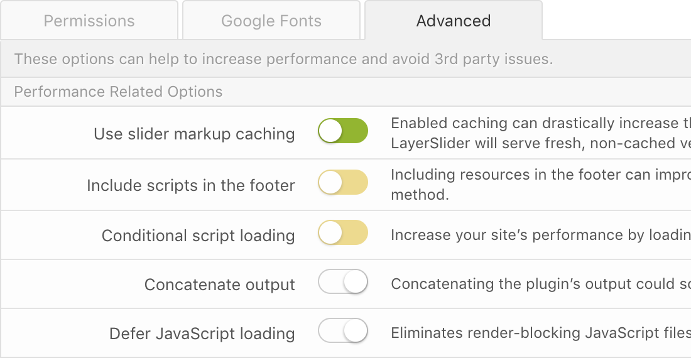
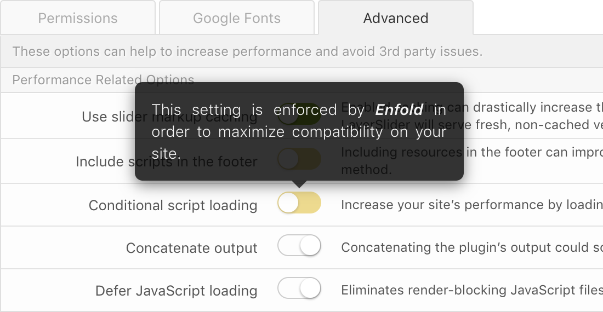

The sources API lets you load customized plugin contents externally. This includes skins, transitions, sample sliders, Google fonts, and any other asset you might want to use to adjust the plugin according to the needs of your work.
It's for developers
This documentation is made explicitly for developers to make their lives easier by describing how the plugin internals are working. If you are not a programmer, please read the Documentation for End-Users, you don't need to follow any of the instructions here.
Overview
This documentation covers everything you need to know about licensing, incorporating LayerSlider WP into a WordPress theme, internal plugin APIs, filter and action hooks, and every other asset you might need to interface with the plugin as a developer.
Licensing terms
- Make sure that you have read, understood and follow the terms described below.
- You need to purchase an Extended License for each theme that includes LayerSlider.
- Register your theme to acquire an In-Stock usage permission: kreaturamedia.com/in-stock/
Envato's terms
Envato has many different assets dealing with licensing and usage terms. You can find these in their entirety on the following URLs: Extended License Terms – Licensing FAQ – Theme Submission Requirements – Item Promotion Guidelines – Bundled Plugins.
These terms are not unique to LayerSlider, Envato enforces them for any other bundled plugins as well. The following is a brief summary of the most relevant rules. Make sure to also read them in their full length.
-
Purchase an Extended License per themes and acquire an In-Stock usage permission.
You need to purchase an Extended License for each of your theme that includes LayerSlider. For the In-Stock usage permission, see the Kreatura's terms section below.
-
It's only for WordPress themes sold on ThemeForest
Envato does not allow bundling CodeCanyon items in themes that are sold outside of the marketplace.
-
You cannot offer the plugin as a stand-alone item
You cannot share the stand-alone Item with your customers (e.g. include it in the download package, make it available on your website, etc). You have to use the TGM Plugin Activation class. See the Bundling in themes section for more information.
-
Use the preferred settings for TGM plugin installation
Bundled plugins can only be used with your theme. In accordance with the previous cluase, you need to configure TGMPA to automatically activate & deactivate LayerSlider whenever users are switching themes.
-
You cannot provide an Item Purchase Code for your customers
Since Envato doesn't have a "multi-use" or transferable license, your customers are not entitled to receive an Item Purchase Code with your theme and use the plugin separately from your work.
-
Updating the plugin is your responsibility
Since your customers can't receive updates from us, you need to handle this on your own. The TGM Plugin Activation class makes it simple, and we are providing the necessary tools to make it quick as well.
-
You need to handle LayerSlider related support requests after your customers
We would like to hear your thoughts and suggestions to fix issues and improve our items based on your feedback, but we cannot provide free support for your customers, this is your responsibility.
-
Explain the difference between bundled and standalone versions
You should include an easy-to-find disclaimer and a reference to the following help article explaining customers the difference between bundled and standalone plugins: https://help.market.envato.com/hc/en-us/articles/213762463
-
Avoid misleading statements
- Stating that customers will receive a LayerSlider license;
- Promising official support from Kreatura
Kreatura's terms
Below you can see our own terms that you must follow if you have decided to integrate LayerSlider into your theme.
-
Submit your theme details for In-Stock usage
Complete theme registration on the following URL: kreaturamedia.com/in-stock/
-
Add an attribution link to LayerSlider's homepage
Please make sure to mention LayerSlider in your Envato Item page and on your demo site and add an attribution link to LayerSlider's homepage: layerslider.kreaturamedia.com
- Do not rename, hide or otherwise manipulate Kreatura and LayerSlider branding
-
Do not prevent customers purchasing/using the standalone version
Some customers will likely decide to purchase LayerSlider separately to obtain their own individual license. Hiding the Product Activation box and other obstacles just raises frustration and prevents customers accessing certain features.
-
You cannot modify the plugin to use it for unintended purposes
You are not allowed to alter the item in order to unlock premium features or get around safety mechanisms. Modifying the plugin to use it for unintended purposes is strictly prohibited. This includes, but not limited to, faking plugin activation, sharing the template store contents, etc.
Changes of these terms and conditions
We reserve the right to change these terms and conditions at any time and without notice. Future changes will also be applied to you in order to have a valid In-Stock usage permission.
We reserve the right to change these terms and conditions at any time and without notice. Future changes will also be applied to you in order to have a valid In-Stock usage permission.
A fair warning
We're always open to settle any situation peacefully and give you opportunity and enough time to perform any changes that may be necessary. However, we reserve the right to revoke your In-Stock usage permission in severe cases of breaching any of the above described terms and conditions if you're uncooperative and we cannot reach an agreement.
We're always open to settle any situation peacefully and give you opportunity and enough time to perform any changes that may be necessary. However, we reserve the right to revoke your In-Stock usage permission in severe cases of breaching any of the above described terms and conditions if you're uncooperative and we cannot reach an agreement.
Bundling in themes
Introduction
Before you begin, make sure that you have read the licensing terms.
As of 9th September 2013, Envato requires authors to load bundled WordPress plugins in themes with the TGM Plugin Activation class. This helps authors to include 3rd party components easily and handle their dependencies and updates automatically.
Setting up TGM Plugin Activation class
- Download the latest version of TGM Plugin Activation class from their website.
- Select the appropriate options in their download generator and make sure to choose the "ThemeForest" option in the distribution section.
- After the download, you should visit their Installation and Configuration pages for more information about using TGMPA.
- There is also a working example in the downloaded package.
- Check their FAQ if you have further questions.
Example TGM plugin parameters
Below you can see an example configuration for LayerSlider. You can copy and paste this code, however, make sure to change the source and version properties to the correct values.
Remember, you are required to set the
force_deactivation option to true in accordance with Envato's licensing terms.
// LayerSlider config array( 'name' => 'LayerSlider WP', 'slug' => 'layerslider', 'source' => get_stylesheet_directory() . '/plugins/layerslider.zip', 'required' => false, 'version' => '6.0.0', 'force_activation' => true, 'force_deactivation' => true, 'external_url' => 'https://layerslider.kreaturamedia.com/' )
Maximizing compatibility
There are a few settings under LayerSlider -> Options -> Advanced that you might want to change in order to offer a better experience for your customers with your theme. For example, the "Include scripts in the footer" option should be enabled on all sites, but we're still keeping it disabled by default to maximize compatibility with outdated themes that don't support wp_footer().
Another use case is when your theme has a built-in feature to use CDNs, compress or combine JavaScript files, etc. In those cases it might be needed to enforce certain settings to avoid printing scripts mid-page. To keep file sizes minimal, LayerSlider has some additional modules as external files, which are loaded conditionally based on the slider settings. Depending on how you capture and update scripts (if any), you might also want to enable the "Always load all JavaScript files" option to avoid issues with caches and dynamically loaded files.
The below example shows how you can override and enforce certain settings, which are guaranteed to work with your theme. For the full list of potential options, refer to the table below. Make sure to replace Theme Name with the actual name of your theme.
/*
* LS_Config::forceSettings() was added in LayerSlider 6.7.5
* Make sure to include the method_exists() condition,
* otherwise it will cause a fatal error on older versions.
*/
if( method_exists( 'LS_Config', 'forceSettings' ) ) {
LS_Config::forceSettings( 'Theme Name', array(
'include_at_footer' => true,
'conditional_script_loading' => true
));
}
This is how the above code would look like for your users:


It's important to note that this method is not for changing the defaults. These settings will be enforced in all cases, thus users won't be able to change them. In order to provide some level of freedom, you should only enforce the settings you absolutely need to.
| Option Key | Description | Type | Default |
|---|---|---|---|
| use_cache | LayerSlider's own markup caching to improve performance. Should be disabled when using dynamic content or multilingual sliders. | Boolean | true |
| include_at_footer | Include JS files at the footer. One of the most common options that should be enforced if your theme supports wp_footer(). | Boolean | false |
| conditional_script_loading | Load plugin files and additional components dynamically to spare resources. | Boolean | false |
| concatenate_output | Eliminates line breaks and unnecessary white spaces from the output, which improves performances and could solve certain issues like wpautop(). Might cause issues on certain servers. | Boolean | false |
| defer_scripts | Eliminates render-blocking JavaScript files, but might also delay a bit displaying sliders above the fold. | Boolean | false |
| rocketscript_ignore | Excludes LayerSlider files from CloudFront’s Rocket Loader, which can help overcoming potential issues with async loading. | Boolean | false |
| load_all_js_files | Always load all JS files, even if Conditional script loading and similar options are enabled. This could help overcoming issues with CDNs and JavaScript minify/combine features. | Boolean | false |
| gsap_sandboxing | Attempts to create an isolated copy of GreenSock and run it independently from other versions that might be used by 3rd parties. | Boolean | false |
| use_custom_jquery | Attempts to deregister jQuery and loads an older but more supported version from Google's CDN. Do not enforce this settings. It's never a good idea. It's there for edge cases only. | Boolean | false |
| scripts_priority | add_action()'s priority parameter. Used to specify the order in which scripts are loaded. | Integer | 3 |
Disabling activation features
Since product activation requires a valid Item Purchase Code that the majority of your customers will not have, you might want to disable activation-related banners and messages. To do that, please paste the below code into your theme's functions.php file to set up LayerSlider as a theme bundle. This will disable certain features and banners, so your buyers will not be confused about these messages.
Newer versions of LayerSlider warn users about feature availability instead of completely hiding the Product Activation box. This helps users avoiding difficulties if they have a separate license for LayerSlider and would like to use this feature.
<?php
if( function_exists( 'layerslider_set_as_theme' ) ) {
layerslider_set_as_theme();
}
?>
Disabling promotions
LayerSlider offers customization services from a 3rd party company: WPKraken. While this is not at a prominent place at all and shouldn't bother users, we understand if you would like to hide it. To do that, please paste the below example code into your theme's functions.php file.
<?php
if( function_exists( 'layerslider_hide_promotions' ) ) {
layerslider_hide_promotions();
}
?>
Constants & variables
This section lists and describes the constants and global variables of LayerSlider, which can be useful for writing custom code, improving theme integration and making custom solutions built on top of LayerSlider.
List of plugin constants
| Name | Purpose |
|---|---|
| LS_ROOT_FILE | Filesystem path for the plugin's main file, which can be used to identify its slug and base name. Ex.: /path/to/your/site/wp-content/LayerSlider/layerslider.php |
| LS_ROOT_PATH | Filesystem path for the plugin's folder. Useful when you want to include specific files located in the LayerSlider folder. Does not include a trailing slash. Ex.: /path/to/your/site/wp-content/LayerSlider |
| LS_ROOT_URL | Web URL pointing to the LayerSlider plugin directory. Does not include a trailing slash. Ex.: http://yourdomain.com/wp-content/LayerSlider |
| LS_PLUGIN_VERSION | The installed version of LayerSlider. Ex.: 5.4.0 |
| LS_PLUGIN_SLUG | The plugin's slug. Essentially it's the name of the plugin folder. Ex.: LayerSlider |
| LS_PLUGIN_BASE | The plugin base name. Usually used by internal WP functions. Ex.: LayerSlider/layerslider.php |
| LS_MARKETPLACE_ID | LayerSlider's Envato Market item ID. |
| LS_DB_TABLE | The LayerSlider database table name that stores your sliders. Always use in conjunction with $wpdb->prefix to support multisite installations. Consider using LS_Sliders class instead of custom queries. |
| LS_TEXTDOMAIN | The textdomain used by LayerSlider for gettext calls. |
List of global variables
| Name | Purpose |
|---|---|
| $GLOBALS['lsPluginPath'] | [DROPPED] This variable is no longer available. Use the LS_ROOT_URL constant instead. A filter hook called layerslider_root_url is also available. |
| $GLOBALS['lsPluginVersion'] | [DROPPED] This variable is no longer available. Use the LS_PLUGIN_VERSION constant instead. |
| $GLOBALS['lsAutoUpdateBox'] | [DROPPED] Used to hide the Product Activation box. Use layerslider_set_as_theme() instead. See section Bundling in themes for more information and examples. |
Working with sliders
We have a new static class that you can use comfortably to work with sliders. Our older functions for this purpose are still available, but we might remove them in future versions, and we highly recommend you to use the new solution.
Escaping and sanitizing user input is your responsibility. Whenever it's possible, we're using $wpdb::prepare() and filter the individual parameters and array items. However, it's not always possible with every data type, thus you're expected to properly handle user input prior calling any class method.
Class methods
-
(array)
LS_Sliders::find( [mixed $filters] )Finds sliders with the provided filters and settings. See also the corresponding section below on this page for more information and examples. Accepts:
- (int) ID of a slider,
- (string) Slug of a slider,
- (array) Array of slider IDs as integers
- (array) The filter object, see below on this page
-
(int)
LS_Sliders::count( void )Returns the total number of found sliders from the latest query with ignoring pagination settings.
-
(int)
LS_Sliders::add( [string $title = 'Unnamed' [, array $data = array() [, string $slug = '' ]]] )Adds a new slider with the provided settings and slug. All parameters are optional. The plugin will use the default slider settings if you provide partial/empty slider data.
-
(bool)
LS_Sliders::remove( int $ID )Removes a slider by its database ID. Returns a boolean value to indicate success or failure. This method preserves the actual data in DB to restore it later.
-
(bool)
LS_Sliders::delete( int $ID )Permanently deletes a slider by its database ID. Returns a boolean value to indicate success or failure.
-
(bool)
LS_Sliders::restore( int $ID )Restores a previously removed slider by its database ID. Returns a boolean value to indicate success or failure.
LS_Sliders filter object
| Key | Type | Default | Description |
|---|---|---|---|
| columns | string | '*' | Database columns expected to be returned. |
| where | string | '' (empty string) | Standard MySQL WHERE statement |
| exclude | array | array('hidden', 'removed') | Rows excepted to be excluded from search results. |
| orderby | string | 'date_c' | The order result by a column. |
| order | string | 'DESC' | The order of returned data. |
| limit | int | 10 | Limit the number of returned sliders. |
| page | int | 1 | Get results for a specific page when using pagination. |
| groups | bool | false | Disables slider grouping and hides group entries by default. Sliders that are in a group are still listed in the results. When set to true, group records will be present and an itemsarray will contain all sliders belonging to that group. |
| data | bool | true | Returns the data object of sliders. |
Examples
Find a slider by its database ID.
$sliders = LS_Sliders::find(2);
Find a slider by its slug.
$sliders = LS_Sliders::find('fullwidthdemo');
Find multiple sliders by their IDs.
$sliders = LS_Sliders::find(array(12, 15, 23));
Find sliders with custom filters and return results with modifiers.
$sliders = LS_Sliders::find(array( 'orderby' => 'date_m', 'limit' => 30, 'data' => false ));
Returning slider objects
| Key | Type | Description |
|---|---|---|
| id | int | The database ID of sliders. |
| group_id | int | The database ID of the group that a slider belongs to (if any) |
| author | int | The WP user ID of the slider author. |
| name | string | The user-defined name of sliders (if any). |
| slug | string | The slider's slug (if any). |
| data | mixed | The slider's data object containing all of its settings. It may be returned as a string or completely excluded from results depending on your filters. |
| date_c | int | UNIX timestamp for the date of creation. |
| date_m | int | UNIX timestamp for the date of last modification. |
| schedule_start | int | UNIX timestamp for the schedule start date. |
| schedule_end | int | UNIX timestamp for the schedule end date. |
| flag_popup | int | Indicates whether the slider is a Popup slider. |
| flag_group | int | Indicates whether the record is a special group entry that you might want to filter out. |
| flag_hidden | int | Indicates whether the slider is hidden or published. |
| flag_deleted | int | Indicates whether the slider is removed or publicly visible. |
About Slider Groups
The Slider Groups feature is introduced in v6.9.0. It allows users to have a sort of folders for their sliders. These groups are special entries in the same wp_layerslider table, thus you might want to filter them out or handle them differently than regular sliders.
The LS_Sliders class described above already supports handling groups. There is nothing to do on your part if you're using this class for listing sliders. The default behavior is to disable grouping and exclude group entries from the list. The result is the same as with any previous version of LayerSlider.
However, if you're using custom queries, you need to make sure to exclude group entries by yourself. Since these entries are present in the same table but have slightly different properties, it can cause compatibility issues if you aren't handling them the way it's supposed to. At the very least, you don't want to list these hidden entries for your customers portraying them as regular sliders.
The LS_Sliders class has been updated to cover all these new features and you can also build custom solutions on top of it. Below is the list of API methods that are exposed to you to handle groups yourself. Don't forget, the Working with sliders section above has also been updated and there are additional filters and data points you can rely on.
We also have a new LS_SliderLibrary JavaScript API. It's a shockingly easy way to implement slider pickers with minimal code and it supports all the new features.
Using either LS_Sliders or LS_SliderLibrary is very much encouraged, as they're maintained and will always be compatible with all potential future changes. They cover basically all use cases and offer a very easy way to implement custom solutions with just a few lines of code.
Methods
-
(int)
LS_Sliders::addGroup( string $name = 'Unnamed' )Creates a group with the specified name. Returns the database ID of the newly created group entry.
-
(bool)
LS_Sliders::removeGroup( int $groupId )Moves all sliders out of the group, then deletes it completely. Sliders in the group remain untouched.
-
(bool)
LS_Sliders::renameGroup( int $groupId, string $name = 'Unnamed' )Renames the specified group by its groupId with the name you specify.
-
(bool)
LS_Sliders::addSliderToGroup( int $sliderId, int $groupId )Adds the specified slider to the specified group.
-
(bool)
LS_Sliders::removeSliderFromGroup( int $sliderId, int $groupId )Removes the specified slider from the specified group.
LS_SliderLibrary API
Basic usage
The key concept behind the LS_SliderLibrary API is to offer a pre-made and feature-rich slider picker/selector, so developers can focus on the things that really matter to them.
When called, the LS_SliderLibrary API displays the same modal window that the LayerSlider Gutenberg block uses with features like Slider Groups and others already implemented.
First, you need to enqueue the Slider Library assets by calling the ls_enqueue_slider_library() PHP function. This will load any dependencies needed to use the Slider Library.
<?php ls_enqueue_slider_library(); ?>
Then, you can access the Slider Library via JavaScript with the following code:
LS_SliderLibrary.open({
onChange: function( sliderData ) {
// Do stuff here with sliderData
}
});
The onChange callback will be triggered whenever a slider has been selected by the user. The sliderData parameter contains the id, name, preview image, slide count and other basic information about the selected slider. If you need more information about the selected slider, you can always use the LS_Sliders PHP class to find the slider by its ID.
The Slider Library will automatically close itself after selecting a slider, but you can also call LS_SliderLibrary.close() if needed.
Customization
The modal window displaying the Slider Library uses the Kreatura Modal Window (kmw.js) script. You can pass custom properties to this script via the modalSettings and groupModalSettings properties, so you can change its title, appearance, animation settings, behavior, etc.
modalSettings and groupModalSettings both share the same available settings. The distinction is that when you open a Slider Group, it will create a separate sub-modal window and you can customize that separately as well.
This modal script is custom-made for internal use, thus the public documentation on how to use it is limited. However, you can always use your browser's JS console to list the available options. Just look for the kmw.modal.defaults and kmw.overlay.defaults global variables.
The LS_SliderLibrary.defaults global variable contains the default configuration for these modal windows.
| Common properties | Type | Default | Description |
|---|---|---|---|
| into | String | 'body' | The CSS/jQuery selector indicating where the modal window should be inserted. |
| title | String | 'Choose LayerSlider' | The title of the modal window. It's already localized to many languages, but you can override it if needed. |
| content | String | Element | 'Loading sliders ...' | The default content of the modal window. Used to display a loading message until the AJAX request completes and renders the actual slider list. Also localized. |
| clip | Boolean | true | Whether to clip the body or not to prevent scrolling. |
| closeButton | Boolean | true | Whether to show the modal close button. |
| closeOnEscape | Boolean | true | Enables or disables the ESC keyboard shortcut to close the modal. |
| overlay | Boolean | true | Whether to use an overlay or not. |
| overlaySettings | Object | {} | Overlay settings. Shares common property names with the modal settings. These include callback events, animation settings, etc. Check kmw.overlay.defaults for the full list. |
| Layout properties | Type | Default | Description |
| width | Number | String | '100%' | The width of the modal window, including paddings. minWidth and maxWidth can still pose constraints and you should change those instead of this setting to preserve responsiveness. |
| height | Number | String | '100%' | The height of the modal window, including paddings. minHeight and maxHeight can still pose constraints and you should change those instead of this setting to preserve responsiveness. |
| minWidth | Number | String | 800 | The minimum width, including paddings, while the modal can downscale and be responsive. |
| minHeight | Number | String | 800 | The minimum height, including paddings, while the modal can downscale and be responsive. |
| maxWidth | Number | String | 800 | The maximum width, including paddings, while the modal can upscale and be responsive. |
| maxHeight | Number | String | 800 | The maximum height, including paddings, while the modal can downscale and be responsive. |
| spacing | Number | String | 40 | The space around the modal window from the browser edges. |
| padding | Number | String | 40 | The padding inside the modal window. |
| Appearance properties | Type | Default | Description |
| theme | String | 'light' | The theme and color scheme of the modal window. Can be 'dark'. |
| modalClasses | String | '' (empty string) | Space-separated list of class names that will be applied to the modal window. |
| modalStyle | Object | String | '' (empty string) | An object containing CSS property-value pairs, or a CSS property list as a string that will be applied to the modal window. |
| contentClasses | String | '' (empty string) | Space-separated list of class names that will be applied to the modal window's inner content. |
| contentStyle | Object | String | '' (empty string) | An object containing CSS property-value pairs, or a CSS property list as a string that will be applied to the modal window's inner content. |
| closeButtonStyle | Object | String | '' (empty string) | An object containing CSS property-value pairs, or a CSS property list as a string that will be applied to the modal window's close button. |
| animationIn | Object | String | 'scale' | A string of a pre-defined transition, or an object containing the transition details animated via GSAP. Check the kmw.transition.data global variable for more information. |
| animationOut | Object | String | null | A string of a pre-defined transition, or an object containing the transition details animated via GSAP. Check the kmw.transition.data global variable for more information. A null value will play animationIn in reverse. |
| Event properties | Type | Default | Description |
| onBeforeOpen | Function | null | Triggered right before the Slider Library will open. |
| onOpen | Function | null | Triggered after the Slider Library has opened. |
| onBeforeClose | Function | null | Triggered right before the Slider Library will close. |
| onClose | Function | null | Triggered after the Slider Library has closed. |
There are several additional undocumented options governing the appearance and behavior. Using custom CSS to force something that we otherwise have settings for may not be the best idea. Do make sure to check the mentioned global variables for the full list of options.
This modal script is custom-made to better fit our needs than most 3rd party options. While its features mostly documented and it may be appealing to you, this is in no way an encouragement to use it outside of LayerSlider. It's still our own intellectual property, but you can use it as part of the plugin to make custom implementations related and relevant to LayerSlider.
Dos and Don'ts
- Don't change the modal
idproperty. - Don't target the modal or its elements via CSS directly.
- Do apply a unique class name with
modalClassesand use it for CSS customization. You Don't want to accidentally override other modals or different implementations.
Examples
Finally, here's a more lifelike usage example:
LS_SliderLibrary.open({
// Triggers when the user has selected a slider.
onChange: function( sliderData ) {
alert( 'Selected slider ID: ' + sliderData.id );
alert( 'Selected slider name: ' + sliderData.name );
},
// Modal customization
modalSettings: {
title: 'Choose LayerSlider',
modalClasses: 'my-custom-class',
onBeforeOpen: function() {
alert('The modal is opening!');
},
},
// Group sub-modal customization
// Uses the same settings as modalSettings
groupModalSettings: {
}
});
Working with sources
Skins
Feature availability
Externally loaded skins have full feature availability. They will show up in the slider settings for the users to choose them, and all the other features (e.g.: the LayerSlider skin editor) will work in the same way as the built-in ones.
Structure of loadable skins
Every skin needs to have its own separate folder. The lowercase base name of the skins' folder will be used as a handle to manage the loaded skins. You need to avoid adding multiple skins with the same folder name, as the later ones will override previously added skins. This also means that you cannot use the names of the built-in skins, which are: borderlessdark, borderlessdark3d, borderlesslight, borderlesslight3d, carousel, darkskin, darkskin, defaultskin, fullwidth, fullwidthdark, glass, lightskin, minimal, noskin, v5.
Each skins folder needs to contain a skin.css file, which will be loaded by the slider when it's needed. The skin.css file name is used to validate the folder, and you cannot use another name or file type.
Skin metadata
Inside your skins' folder, you can add an additional info.json file that LayerSlider will detect automatically and will use to get additional information for your skin. A typical JSON would be:
{
"name": "Borderless Dark for 3D sliders",
"version": "4.6.0",
"requires": "4.5.5",
"author": "Kreatura Media",
"created": "2013-01-15",
"updated": "2013-07-29",
"note": ""
}
Make sure to provide valid JSON data instead of a Javascript object literal.
Currently not every metadata is being used by LayerSlider, but we highly recommend you to keep all of them up-to-date, as future releases might introduce changes based on these information. For more examples about the info.json file, please see our skins in the /static/skins/ directory.
API methods
-
(void)
LS_Sources::addSkins( string $path )
Adds the skins from the directory provided. $path is the directory that holds all of your skins. When a skin.css file is found inside $path it's assumed to be a direct skin directory and LayerSlider won't attempt to find children skin folders. As an additional measure of security, please use absolute paths in all cases.
LS_Sources::addSkins( get_template_directory().'/ls-skins' ) // Loads all skins from the ls-skins directory LS_Sources::addSkins( get_template_directory().'/ls-skins/myskin' ); // Loads only "myskin" from the ls-skins directory
-
(void)
LS_Sources::removeSkin( string $handle )
Removes a previously added skin by its lowercase folder name as being $handle.
LS_Sources::removeSkin('myskin'); -
(array)
LS_Sources::getSkin( string $handle )
Returns skin information by its lowercase folder name as being $handle.
$skin = LS_Sources::getSkin('myskin'); var_dump($skin); // Check what's inside -
(array)
LS_Sources::getSkins( )
Returns all skins.
$skins = LS_Sources::getSkins(); var_dump($skin); // Check what's inside
-
(string)
LS_Sources::pathForSkin( string $handle )
Returns an absolute path for the skin's directory by its lowercase base name as being $handle. The returned path has a trailing slash.
$path1 = LS_Sources::pathForSkin('myskin'); $path2 = LS_Sources::pathForSkin('borderlessdark'); // $path1 is /path/to/your/site/wp-content/themes/kreatura/ls-skins/myskin/ // $path2 is /path/to/your/site/wp-content/plugins/LayerSlider/static/skins/borderlessdark/ -
(string)
LS_Sources::urlForSkin( string $handle )
Returns an absolute URL for the skin's directory by its lowercase base name as being $handle. The returned URL has a trailing slash.
$url1 = LS_Sources::urlForSkin('myskin'); $url2 = LS_Sources::urlForSkin('borderlessdark'); // $url1 is http://mysite.com/wp-content/themes/kreatura/ls-skins/myskin/ // $url2 is http://mysite.com/wp-content/plugins/LayerSlider/static/skins/borderlessdark/
Bundled sliders
Feature availability
Externally loaded demo sliders have full feature availability. They will show up in the list of importable sliders and can be used in the same way as the built-in ones.
Structure of importable demo sliders
Every demo slider needs to have its own folder. The lowercase base name of the sliders' folder will be used as a handle to manage the loaded demo sliders. You need to avoid adding multiple sliders from the same folder name, as the later ones will override previously added sliders. This also means that you cannot use the names of the built-in demo sliders, which are: carousel, fullwidth, v5.
Each slider folder needs to contain a slider.zip file, which will be used to import the demo content. The slider.zip file name is used to validate the folder, and you cannot use another name or file type.
If preview.png is found in the demo slider folder, it will be used in the list of importable sample sliders to display a preview image of your work. Preview images should have 150x150px dimensions and use PNG format with transparency.
Demo slider folders should also have an additional info.json file that contains matadata for your slider. See the details in the next section.
For working examples, please see our sample sliders in /demos/ within the LayerSlider plugin directory.
Slider metadata
Inside your demo sliders' folder, you can add an additional info.json file that LayerSlider will detect automatically and will use to get additional information for your slider. A typical JSON would be:
{
"name": "Full width demo slider",
"version": "5.3.0",
"requires": "5.1.0",
"author": "Kreatura Media",
"url": "preview web address",
"groups": "bundled,free",
"created": "2013-12-23",
"updated": "2013-12-23",
"note": ""
}
Make sure to provide valid JSON data instead of a Javascript object literal.
The version number for
requires needs to be at least 5.1.0, since this version introduced the new ZIP archive import/export solution.
Currently not every metadata is being used by LayerSlider, but we highly recommend you to keep all of them up-to-date, as future releases might introduce changes based on these information. For more examples about the info.json file, please see our sliders in the /demos/ folder within the plugin's directory.
API methods
-
(void)
LS_Sources::addDemoSlider( string $path )
Adds the demo sliders from the directory provided. $path is the directory that holds all of sliders. When a slider.zip file is found inside $path it's assumed to be a direct demo slider directory and LayerSlider won't attempt to find children folders. As an additional measure of security, please use absolute paths in all cases.
LS_Sources::addDemoSlider( get_template_directory().'/ls-sliders' ) // Loads all demo sliders from the ls-sliders directory LS_Sources::addDemoSlider( get_template_directory().'/ls-sliders/myslider' ); // Loads only "myslider" from the ls-sliders directory
-
(void)
LS_Sources::removeDemoSlider( string $handle )
Removes a previously added demo slider by its lowercase folder name as being $handle.
LS_Sources::removeDemoSlider('myslider'); -
(array)
LS_Sources::removeDemoSlider( string $handle )
Returns demo slider information by its lowercase folder name as being $handle.
$slider = LS_Sources::getDemoSlider('myslider'); var_dump($slider); // Check what's inside -
(array)
LS_Sources::getDemoSliders( )
Returns all previously added demo sliders.
$sliders = LS_Sources::getDemoSliders(); var_dump($sliders); // Check what's inside
-
(string)
LS_Sources::pathForDemoSlider( string $handle )
Returns an absolute path for the demo slider's directory by its lowercase base name as being $handle. The returned path has a trailing slash.
$path1 = LS_Sources::pathForDemoSlider('myslider'); $path2 = LS_Sources::pathForDemoSlider('fullwidth'); // $path1 is /path/to/your/site/wp-content/themes/kreatura/ls-sliders/myslider/ // $path2 is /path/to/your/site/wp-content/plugins/LayerSlider/static/demos/fullwidth/
Managing sample transitions
This API is not yet available.
Managing Google Fonts
This API is not yet available. Since v6.0.0, sliders will import their used Google Fonts.
Action hooks
Public action hooks reference
Read the WP Codex entry for more information about using actions.
| Hook name | Description |
|---|---|
| layerslider_installed | Runs only on the first installation, even if the plugin was removed previously. |
| layerslider_activated | Runs when the plugin has been activated. |
| layerslider_updated | Runs when the plugin was updated and a new version is recognized. This method also works when a user overrides the plugin folder on FTP. |
| layerslider_deactivated | Runs when the plugin has been deactivated. |
| layerslider_uninstalled | Runs when the plugin has been uninstalled. |
| layerslider_ready | Runs when the plugin has loaded and it is ready to process custom code. This hook fires on every page refresh, and it might slow down pages. |
| layerslider_before_slider_content | Runs before printing slider content. This action can be used to print custom HTML before the slider containment element. |
| layerslider_after_slider_content | Runs after printing slider content. This action can be used to print custom HTML after the slider containment element. |
Some additional action hooks are already used in the plugin internals, but these are not stable yet and can change at any time. They will be added to the list above when they are ready.
Actions hook examples
The following example uses the layerslider_installed action to add demo content when the plugin was installed for the first time.
<?php
add_action('layerslider_installed', 'my_layerslider_demos');
function my_layerslider_demos() {
// Method 1: Using importUtil
include LS_ROOT_PATH.'/classes/class.ls.importutil.php';
$import = new LS_ImportUtil('<path_to_your_export_file>');
// Method 2: Using LS_Sliders::add()
LS_Sliders::add($title, $dataArray);
}
?>
This example uses the layerslider_before_slider_content and layerslider_after_slider_content actions to print out a custom slider wrapper.
<?php
add_action('layerslider_before_slider_content', 'my_ls_before_content');
add_action('layerslider_after_slider_content', 'my_ls_after_content');
function my_ls_before_content() {
echo '<div class="my-layerslider-wrapper">';
}
function my_ls_after_content() {
echo '</div>';
}
?>
Filter hooks
Public filter reference
Read the WP Codex entry for more information about using filters.
The structure of the defaults object is not yet final. Consider potential risks before using it.
Although the filter API is stable, the slider data to be processed may change over time.
| Hooks | Description |
|---|---|
| layerslider_root_url |
URL to LayerSlider's root directory. Using to load static assets (CSS, JS, images, etc) located within the plugin folder. If you're loading LayerSlider from a non-standard location, you may need to override the default URL to point to the right path.
Accepted arguments:
|
| layerslider_pre_parse_defaults |
Runs before parsing defaults. It contains the raw slider data, which includes legacy property names, and it should not be used.
Accepted arguments:
|
| layerslider_override_defaults |
Provides an easy way to change the default slider settings. It applies on the admin interface, but it will take effect in generating the slider markup as well. This filter won't override previously created sliders.
Accepted arguments:
|
| layerslider_post_parse_defaults |
Runs after the slider data was parsed based on the defaults, and the plugin is ready to override settings without later influences. Use this filter wisely, as it can break previously created sliders, since the users won't be able to change or prevent these overrides.
Accepted arguments:
|
| layerslider_slider_init |
HTML that contains the slider initialization JavaScript code. In some cases this is printed at a different location that the rest of the slider HTML markup, thus there is another filter for that.
Accepted arguments:
|
| layerslider_slider_markup |
This filter can be useful to work with the generated HTML string instead of the raw slider data. Make sure to also check the layerslider_slider_init filter.
Accepted arguments:
|
| layerslider_skin_url |
LayerSlider generates the proper skin URLs automatically. You should NOT use this filter without a very good reason. Developers can add their own skins and other assets externally via the LS_Sources class, which generates the appropriate URL out of the box..
Accepted arguments:
|
| layerslider_attr_list |
Array of style and transition properties to be applied on layers. Called multiple times for each layer and attribute type. You MUST return a string that will be the value of style and data-ls attributes. Use implode().
Accepted arguments:
|
| ls_meta_generator |
This filter can be used to change or remove the <meta name="generator" content="Powered by LayerSlider... HTML tag in the page source code. Return an empty string if you want to remove it completely.
Please note, the meta tag is there for stats and other uses. This is not an advertisement, search engines ignore these kinds of backlinking. |
Some additional filters are already used in the plugin internals, but these are not stable yet and can change at any time. They will be added to the list above when they are ready.
Filter hook examples
The following example uses the layerslider_override_defaults filter to change some default settings related to appearance.
<?php
add_filter('layerslider_override_defaults', 'my_override');
function my_override($defaults) {
// Uncomment these to see all settings
// echo '<pre>';
// var_dump($defaults);
// echo '</pre>';
// Override some defaults
$defaults['slider']['type']['value'] = 'fullwidth';
$defaults['slider']['skin']['value'] = 'myskin';
return $defaults;
}
?>
Another example of using the layerslider_override_defaults filter to apply the same transition on slides by default.
<?php
add_filter('layerslider_override_defaults', 'my_override');
function my_override($defaults) {
$defaults['slides']['2dTransitions']['value'] = '5';
return $defaults;
}
?>
Example of completely removing the generator HTML meta tag from the page source.
<?php
add_filter('ls_meta_generator', function( $str ) {
return '';
});
?>
Release log
Make sure to read the documentation for End-Users as well. This section contains changes, which could affect developers and their custom solutions built on top of the plugin.
Changes in LayerSlider 6.9.0
- This release introduces Slider Groups, which are essentially special records in the same wp_layerslider database table. The LS_Sliders class and the legacy lsSliders() function adapts to these changes automatically. However, if you're making custom queries, make sure to filter out records where
flag_groupequals to 1. Check out the Working with sliders section to learn more. - There's a new and very easy way to implement slider pickers. The LS_SliderLibrary JS API allows you to enjoy all the new features with minimal code, so you can focus on what really matters to you.
Changes in LayerSlider 6.8.0
- You can now override slider settings via the shortcode or the PHP function. This can be useful if you want to make small changes in certain situations without duplicating the slider. For example, you might want to change the slider skin on some pages to fit better to a different page style. Check the Overriding settings section for more information.
Changes in LayerSlider 6.7.5
- The theme bundling guide now includes a "Maximizing compatibility" section. The newly introduced changes allows your theme to override and enforce certain LayerSlider settings, such as loading scripts at the footer, etc.
Changes in LayerSlider 6.6.7
- Updated licensing terms and theme integration guide.
Changes in LayerSlider 6.6.3
- Added filter hook: layerslider_skin_url
- Added filter hook: layerslider_attr_list
- Updated some examples.
Changes in LayerSlider 6.6.0
- Fixes for overriding default settings like skins that not always worked as expected.
- Fixes in the LS_Sources class that affected externally loaded skins and other materials.
Changes in LayerSlider 6.5.8
- Documented the ls_meta_generator filter hook.
Changes in LayerSlider 6.4.0
- Added
layerslider_slider_initfilter hook to provide an option to change the JavaScript slider initialization code. - Added additional parameters to
layerslider_slider_markupfilter hook to provide context with more information about the affected slider.
Changes in LayerSlider 6.2.0
- Added
layerslider_root_urlfilter to override paths in case the plugin is loaded externally from a custom location. See Filter Reference to learn more.
Changes in LayerSlider 6.0.0
- Updated the Bundling in themes section
- The layerslider database table will now be created on the fly to provide better support for multisite installations. Make sure to use one of the actions hooks to execute your install/update code, as the DB table may not be accessible at any time.
- Bundled demo sliders can now be tagged to work with our new Import Templates modal window. Read the updates Working with sliders section.
- Make sure to read the End-User documentation as well, since version 6.0.0 has countless new features, improvements and other changes.
Changes in previous versions
Version 5.6.2
- The
layerslider_slider_markupfilter hook no longer contains the JS init code
Version 5.6.0
- Fixed the
layerslider_slider_markupfilter hook
Version 5.5.0
- Added a new section for listing constants and global variables used by LayerSlider.
- Improved some example codes
Version 5.4.0
- Added filter to override the slider markup before output
Version 5.3.2
- LS_Sliders::add() now accepts a 3rd parameter to set the slider slug
- Slider slugs are now added properly after importing
Version 5.3.1
- Fixed LS_Sources::urlForSkin() returning invalid URLs on certain installations.
- Dropped multibyte functions in LS_Sources methods, using strtolower() to have lowercase handles instead. The result may vary depending on the server locale.
Version 5.3.0
- Added LS_Sources class to load skins and demo sliders externally.
- The LayerSlider shortcode is now registered globally, thus page builder solutions can pick it up automatically.
- Added new API method 'redraw' to update the slider's layout and contents.
Version 5.2.0
- From now on automatic updates can be enabled on two websites at the same time with a purchase code
- Disabling the auto-update in themes now only warns the users about the feature requirements instead of hiding the box
Version 5.1.0
- Read the release log in the regular docs
- Updated documentation with fixes and extended content
- Changed import/export method, affects samples
- LS_Sliders::find() now accepts slider slug
- LS_Sliders::find() now accepts slider array of IDs
- Fixed $title param of LS_Sliders::add()
- Updated layerslider database table
- Fixed detecting version changes and running upgrade scripts
Version 5.0.x
- Read through all the new docs (including the one for End-Users). Version 5.0.0 has major changes under the hood.
- Old slide & layer transitions are deprecated. They will still work on front-end pages, but might be dropped completely in future versions. You should take this under consideration when changing the defaults.
- Some of the new APIs are still experimental and will likely change. Use them for your own risk.
Major changes till 6.0.0
- Using the Options API for storing sliders is deprecated since v3.6.0, and backwards compatibility will be dropped in the near future.